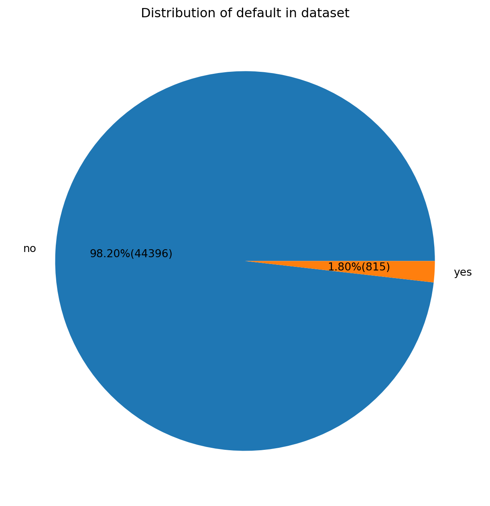

The George Washington University (DATS 6103: An Introduction to Data Mining)
Author
TEAM 11: Anjali Mudgal , Guoshan Yu and Medhasweta Sen
Published
November 21, 2022
1 INTRODUCTION
Bank marketing is the practice of attracting and acquiring new customers through traditional media and digital media strategies. The use of these media strategies helps determine what kind of customer is attracted to a certain institutions. This also includes different banking institutions purposefully using different strategies to attract the type of customer they want to do business with.
As a discipline, marketing has evolved over the past few decades to become what it is today. Earlier, marketing strategies were primarily a means of spreading brand awareness. Today, marketing has been reinvented to fit a much bigger role. Creating both value and revenue to the institution. It is a big step up from its previous communication role, no doubt. One that was necessitated by the evolution of three factors: the consumer, the technology, and data analytics.
Marketing has evolved from a communication role to a revenue generating role. The consumer has evolved from being a passive recipient of marketing messages to an active participant in the marketing process. Technology has evolved from being a means of communication to a means of data collection and analysis. Data analytics has evolved from being a means of understanding the consumer to a means of understanding the consumer and the institution.
Bank marketing strategy is increasingly focused on digital channels, including social media, video, search and connected TV. As bank and credit union marketers strive to promote brand awareness, they need a new way to assess channel ROI and more accurate data to enable personalized offers. Add to that the growing importance of purpose-driven marketing.
The relentless pace of digitization is disrupting not only the established order in banking, but bank marketing strategies. Marketers at both traditional institutions and digital disruptors are feeling the pressure.
Just as bank marketers begin to master one channel, consumers move to another. Many now toggle between devices on a seemingly infinite number of platforms, making it harder than ever for marketers to pin down the right consumers at the right time in the right place.
1.1 The Data Set
The data set used in this analysis is from a Portuguese bank. The data set contains 41,188 observations and 21 variables. The variables include the following:
age (numeric)
job : type of job (categorical: ‘admin.’,‘blue-collar’,‘entrepreneur’,‘housemaid’,‘management’,‘retired’,‘self-employed’,‘services’,‘student’,‘technician’,‘unemployed’,‘unknown’)
marital : marital status (categorical: ‘divorced’,‘married’,‘single’,‘unknown’; note: ‘divorced’ means divorced or widowed)
default: has credit in default? (categorical: ‘no’,‘yes’,‘unknown’)
housing: has housing loan? (categorical: ‘no’,‘yes’,‘unknown’)
loan: has personal loan? (categorical: ‘no’,‘yes’,‘unknown’)
contact: contact communication type (categorical: ‘cellular’,‘telephone’)
month: last contact month of year (categorical: ‘jan’, ‘feb’, ‘mar’, …, ‘nov’, ‘dec’)
day_of_week: last contact day of the week (categorical: ‘mon’,‘tue’,‘wed’,‘thu’,‘fri’)
duration: last contact duration, in seconds (numeric). Important note: this attribute highly affects the output target (e.g., if duration=0 then y=‘no’). Yet, the duration is not known before a call is performed. Also, after the end of the call y is obviously known. Thus, this input should only be included for benchmark purposes and should be discarded if the intention is to have a realistic predictive model.
campaign: number of contacts performed during this campaign and for this client (numeric, includes last contact)
pdays: number of days that passed by after the client was last contacted from a previous campaign (numeric; 999 means client was not previously contacted)
previous: number of contacts performed before this campaign and for this client (numeric)
poutcome: outcome of the previous marketing campaign (categorical: ‘failure’,‘nonexistent’,‘success’)
nr.employed: number of employees - quarterly indicator (numeric)
balance - average yearly balance, in euros (numeric)
y - has the client subscribed a term deposit? (binary: ‘yes’,‘no’)
1.2 The SMART Questions
The SMART questions are as follows:
1.3 Importing the libraries
Code
import numpy as np import pandas as pd import os import matplotlib.pyplot as plt%matplotlib inlineimport warningswarnings.filterwarnings('ignore')import seaborn as snsimport scipy.stats as statsimport statsmodels.api as smimport statsmodels.formula.api as smfimport statsmodels.stats.api as smsimport statsmodels.stats.multicomp as mcimport statsmodels.stats.outliers_influence as influenceimport statsmodels.stats.diagnostic as diagimport statsmodels.stats.stattools as stattoolsimport statsmodels.stats.anova as anovaimport statsmodels.stats.weightstats as weightstatsimport statsmodels.stats.libqsturng as libqsturngimport statsmodels.stats.power as powerimport statsmodels.stats.proportion as proportionimport statsmodels.stats.contingency_tables as contingency_tablesimport statsmodels.stats.multitest as multitestimport statsmodels.stats.diagnostic as diagnosticimport statsmodels.stats.correlation_tools as correlation_toolsfrom statsmodels.formula.api import olsimport researchpy as rpimport scipy.stats as stats
# JOBjob_count = df['job'].value_counts()job_countplt.figure(figsize = (8, 5))job_count.plot(kind ="bar")plt.title("Type of Job Distribution")# %%# MARITALjob_count = df['marital'].value_counts()job_countplt.figure(figsize = (8, 5))job_count.plot(kind ="bar")plt.title("Type of Marital Distribution")# %%# EDUCATION job_count = df['education'].value_counts()job_countplt.figure(figsize = (8, 5))job_count.plot(kind ="bar")plt.title("Type of Education Distribution")#%%# DEFAULTjob_count = df['default'].value_counts()job_countplt.figure(figsize = (8, 5))job_count.plot(kind ="bar")plt.title("Type of Default Distribution")#%%# HOUSINGjob_count = df['housing'].value_counts()job_countplt.figure(figsize = (8, 5))job_count.plot(kind ="bar")plt.title("Type of Housing Distribution")#%%# LOANjob_count = df['loan'].value_counts()job_countplt.figure(figsize = (8, 5))job_count.plot(kind ="bar")plt.title("Type of Loan Distribution")#%%# CONTACTjob_count = df['contact'].value_counts()job_countplt.figure(figsize = (8, 5))job_count.plot(kind ="bar")plt.title("Type of Contact Distribution")#%%# DAYS job_count = df['day'].value_counts()job_countplt.figure(figsize = (8, 5))job_count.plot(kind ="bar")plt.title("Type of Days Distribution")#%%# MONTHjob_count = df['month'].value_counts()job_countplt.figure(figsize = (8, 5))job_count.plot(kind ="bar")plt.title("Type of Months Distribution")#%%# POUTCOMEjob_count = df['poutcome'].value_counts()job_countplt.figure(figsize = (8, 5))job_count.plot(kind ="bar")plt.title("Type of Poutcome Distribution")#%%# OUTCOMEjob_count = df['y'].value_counts()job_countplt.figure(figsize = (8, 5))job_count.plot(kind ="bar")plt.title("Type of Outcome Distribution")plt.tight_layout()plt.show()
2.2 Piechart for all Categorical Variables
Code
#%%def pieChart(x_var,title): yesNo = df.groupby(x_var).size() yesNo.plot(kind='pie', title=title, figsize=[8,8], autopct=lambda p: '{:.2f}%({:.0f})'.format(p,(p/100)*yesNo.sum())) plt.show()pieChart('y','Percentage of yes and no target(term deposit)in dataset')#%%# JOBpieChart('job','Distribution of job in dataset')df.poutcome.value_counts()df.groupby('job').size()#%%# MARITALpieChart('marital','Distribution of marital in dataset')df.poutcome.value_counts()df.groupby('marital').size()#%%# EDUCATIONpieChart('education','Distribution of education in dataset')df.poutcome.value_counts()df.groupby('education').size()#%%# DEFAULTpieChart('default','Distribution of default in dataset')df.poutcome.value_counts()df.groupby('default').size()#%%# HOUSINGpieChart('housing','Distribution of housing in dataset')df.poutcome.value_counts()df.groupby('housing').size()#%%# LOANpieChart('loan','Distribution of loan in dataset')df.poutcome.value_counts()df.groupby('loan').size()#%%# CONTACTpieChart('contact','Distribution of contact in dataset')df.poutcome.value_counts()df.groupby('contact').size()#%%# DAYpieChart('day','Distribution of day in dataset')df.poutcome.value_counts()df.groupby('day').size()#%%# MONTHpieChart('month','Distribution of month in dataset')df.poutcome.value_counts()df.groupby('month').size()#%%# POUTCOMEpieChart('poutcome','Distribution of poutcome in dataset')df.poutcome.value_counts()df.groupby('poutcome').size()#%%# OUTCOMEpieChart('y','Distribution of outcome in dataset')df.poutcome.value_counts()df.groupby('y').size()

y
0 39922
1 5289
dtype: int64
2.3 Histogram and Density Plots for all Numerical Variables